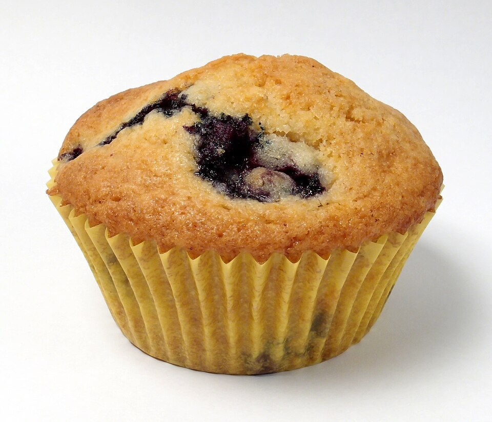

Homepage
Blueberry Muffins

Description
Blueberries are native to North America. American Indians and First Peoples called them 'Star Fruits' or 'Star Berries' likely due to the star-shaped blossom on the underside of each berry.
Muffins being an old European invention would not have included blueberries from the start. Rather, once the colonization of North America began, blueberries became a staple in baked goods with fruits.
Prep time: 10 minutes
Bake time: 30 minutes
Servings: 12 Muffins
Ingredients
-
2 cups all-purpose flour
-
1 cup granulated sugar
-
1 tablespoon baking powder
-
1/2 teaspoon salt
-
1/2 cup unsalted butter, melted
-
1 cup milk
-
2 large eggs
-
1 teaspoon vanilla extract
-
1 1/2 cups fresh blueberries
Instructions
-
Preheat the oven to 375°F (190°C). Line a muffin tin with paper liners or just grease the tin directly.
-
In a large mixing bowl, combine the dry ingredients: flour, sugar, baking powder, and salt.
-
In a separate bowl, whisk together the wet ingredients: melted butter, milk, eggs, and vanilla extract.
-
Pour the wet ingredients into the dry ingredients and stir until just combined. Do not overmix.
-
Gently fold in the fresh blueberries.
-
Spoon the batter into the prepared muffin tin, filling each cup about three-quarters full.
-
Bake in the preheated oven for 20-25 minutes, or until a toothpick inserted into the center of a muffin comes out clean.
-
Remove the muffins from the oven and allow them to cool in the tin for a few minutes.
-
Transfer the muffins to a wire rack to cool completely before serving.